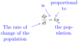
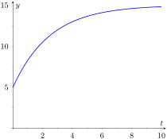

In the first three sections of this chapter, we focused on the basic ideas behind differential equations and the mechanics of solving certain types of differential equations. We have only hinted at their practical use. In this section, we use differential equations for mathematical modeling, the process of using equations to describe real world processes. We explore a few different mathematical models with the goal of gaining an introduction to this large field of applied mathematics.
Some of the simplest differential equation models involve one quantity that changes at a rate proportional to another quantity. In the introduction to this chapter, we considered a population that grows at a rate proportional to the current population. The words in this assumption can be directly translated into a differential equation as shown below.

Figure8.4.1.Translating words into a differential equation
There are some key ideas that can be helpful when translating words into a differential equation. Any time we see something about rates or changes, we should think about derivatives. The word “is” usually corresponds to an equal sign in the equation. The words “proportional to” mean we have a constant multiplied by something.
The differential equation in Figure 8.4.1 is easily solved using separation of variables. We find
\begin{equation*}
p = Ce^{kt}\text{.}
\end{equation*}
Notice that we need values for both \(C\) and \(k\) before we can use this formula to predict population size. We require information about the population at two different times in order to fully determine the population model.
Example8.4.2.Bacterial Growth.
Suppose a population of e-coli bacteria grows at a rate proportional to the current population. If an initial popluation of 200 bacteria has grown to 1600 three hours later, find a function for the size of the population at time \(t\text{,}\) and use it to predict when the population size will reach 10,000.
We already know that the population at time \(t\) is given by \(p = Ce^{kt}\) for some \(C\) and \(k\text{.}\) The information about the initial size of the population means that \(p(0)=200\text{.}\) Thus \(C=200\text{.}\) Our knowledge of the population size after three hours allows us to solve for \(k\) via the equation
yields \(t =(3\ln(50))/\ln(8) \approx 5.644\text{.}\) The population is predicted to reach 10,000 bacteria in slightly more than five and a half hours.
Another example of porportional change is Newton's Law of Cooling. The laws of thermodynamics state that heat flows from areas of higher temperature to areas of lower temperature. A simple example is a hot object that cools down when placed in a cool room. Newton's Law of Cooling is the simple assumption that the temperature of the object changes at a rate proportional to the difference between the temperature of the object and the ambient temperature of the room. If \(T\) is the temperature of the object and \(A\) is the constant ambient temperature, Newton's Law of Cooling can be expressed as the differential equation
If we solve for \(T\text{,}\) we find the explicit temperature
\begin{equation*}
T = A-Ce^{-kt}\text{.}
\end{equation*}
Though we didn't show the steps, the explicit solution involves the typical process of renaming the constant \(\pm e^{-C}\) as \(C\text{,}\) and allowing \(C\) to be positive, negative, or zero to account for both cases of the absolution value and to catch the constant solution \(T=A\text{.}\) Notice that the temperature of the object approaches the ambient temperature in the limit as \(t\to\infty\text{.}\)
Example8.4.3.Hot Coffee.
A freshly brewed cup of coffee is set on the counter and has a temperature of 200\(^\circ\) Fahrenheit. After 3 minutes, it has cooled to 190\(^\circ\text{,}\) but is still too hot to drink. If the room is 72\(^\circ\) and the coffee cools according to Newton's Law of Cooling, how long will the impatient coffee drinker have to wait until the coffee has cooled to 165\(^\circ\text{?}\)
Since we have already solved the differential equation for Newton's Law of Cooling, we can immediately use the function
\begin{equation*}
T = A - Ce^{-kt}\text{.}
\end{equation*}
Since the room is 72\(^\circ\text{,}\) we know \(A = 72\text{.}\) The initial temperature is 200\(^\circ\text{,}\) which means \(C = -128\text{.}\) At this point, we have
\begin{equation*}
T = 72 + 128e^{-kt}
\end{equation*}
The information about the coffee cooling to 190\(^\circ\) in 3 minutes leads to the equation
The coffee drinker must wait \(\displaystyle t = \frac{3 \ln \left(\frac{93}{128}\right)}{\ln \left(\frac{59}{64}\right)} \approx 11.78\) minutes.
We finish our discussion of models of proportional change by exploring three different models of disease spread through a population. In all of the models, we let \(y\) denote the proportion of the population that is sick (\(0 \leq y \leq 1\)). We assume a proportion of \(0.05\) is initially sick and that a proportion of \(0.1\) is sick 1 week later.
Example8.4.4.Disease Spread 1.
Suppose a disease spreads through a population at a rate proportional to the number of individuals who are sick. If 5% of the population is sick initially and 10% of the population is sick one week later, find a formula for the proportion of the popoulation that is sick at time \(t\text{.}\)
The assumption here seems to have some merit because it matches our intuition that a disease should spread more rapidly when more individuals are sick. The differential equation is simply
\begin{equation*}
y = Ce^{kt}\text{.}
\end{equation*}
The conditions \(y(0)=0.05\) and \(y(1) = 0.1\) lead to \(C = 0.05\) a and \(k = \ln(2)\text{,}\) so the function is
\begin{equation*}
y = 0.05e^{(\ln(2)t}\text{.}
\end{equation*}
We should point out a glaring problem with this model. The variable \(y\) is a proportion and should take on values between 0 and 1, but the function \(y = 0.05e^{2t}\) grows without bound. After \(t \approx 4.32\) weeks, \(y\) exceeds 1, and the model ceases to make physical sense.
Suppose a disease spreads through a population at a rate proportional to the number of individuals who are not sick. If 5% of the population is sick initially and 10% of the population is sick one week later, find a formula for the proportion of the popoulation that is sick at time \(t\text{.}\)
The intuition behind the assumption here is that a disease can only spread if there are individuals who are susceptible to the infection. As fewer and fewer people are able to be infected, the disease spread should slow down. Since \(y\) is proportion of the population that is sick, \(1-y\) is the proportion who are not sick, and the differential equation is
Though the context is quite different, the differential equation is identical to the differential equation for Newton's Law of Cooling, with \(A=1\text{.}\) The solution is
\begin{equation*}
y = 1 - Ce^{-kt}\text{.}
\end{equation*}
The conditions \(y(0)=0.05\) and \(y(1) = 0.1\) yield \(C = 0.95\) and \(k = -\ln\left(\frac{18}{19}\right) \approx 0.0541\text{,}\) so the final function is
\begin{equation*}
y = 1-.95e^{\ln\left(\frac{18}{19}\right)t}\text{.}
\end{equation*}
Notice that this function approaches \(y=1\) in the limit as \(t \to \infty\text{,}\) and does not suffer from the non-physical behavior described in Example 8.4.4.
In Example 8.4.4, we assumed disease spread depends on the number of infected individuals. In Example 8.4.6, we assumed disease spread depends on the number of susceptible individuals who are able to become infected. In reality, we would expect many diseases to require the interaction of both infected and susceptible individuals in order to spread. One of the simplest ways to model this required interaction is to assume disease spread depends on the product of the proportions of infected and uninfected individuals. This assumption (regularly seen in the context of chemical reactions) is often called the law of mass action.
Example8.4.7.Disease Spread 3.
Suppose a disease spreads through a population at a rate proportional to the product of the number of infected and uninfected individuals. If 5% of the population is sick initially and 10% of the population is sick one week later, find a formula for the proportion of the population that is sick at time \(t\text{.}\)
This is exactly the logistic equation with \(M = 1\text{.}\) We solved this differential equation in Example 8.2.8, and found
\begin{equation*}
y = \frac{1}{1 + be^{-kt}}\text{.}
\end{equation*}
The conditions \(y(0)=0.05\) and \(y(1) = 0.1\) yield \(b = 19\) and \(k = -\ln\left(\frac{9}{19}\right) \approx 0.7472\text{.}\) The final function is
\begin{equation*}
y = \frac{1}{1+19e^{\ln\left(\frac{9}{19}\right)t}}\text{.}
\end{equation*}
Based on the three different assumptions about the rate of disease spread explored in the last three examples, we now have three different functions giving the proportion of a population that is sick at time \(t\text{.}\) Each of the three functions meets the conditions \(y(0)=0.05\) and \(y(1) = 0.1\text{.}\) The three functions are shown in Figure 8.4.8.
Notice that the logistic function mimics specific parts of the functions from Examples 8.4.4 and Example 8.4.6. We see in Figure 8.4.8.(a) that the logistic and exponential functions are virtually indistinguishable for small \(t\) values. When there are few infected individuals and lots of susceptible individuals, the spread of a disease is largely determined by the number of sick people. The logistic curve captures this feature, and is “almost exponential” early on.
In Figure 8.4.8.(b), we see that the logistic curve leaves the exponential curve from Example 8.4.4 and approaches the curve from Example 8.4.6. This result implies that when most of the population is sick, the spread of the disease is largely dependent on the number of susceptible individuals. Though there are much more sophisticated mathematical models describing the spread of infections, we could argue that the logistic model presented in this example is the “best” of the three.
One of the classic ways to build a mathematical model involves tracking the way the amount of something can change. We sometimes say these models are based on conservation laws. Consider a box with some amount of a specific type of material inside. (Some type of chemical, for example.) The amount of material of the specific type in the box can only change in four ways; we can add more to the box, we can remove some from the box, some of the material can change into material of a different type, or some other type of material can turn into the type we're tracking. In the examples that follow, we assume material doesn't change type, so we only need to keep track of material coming into the box and material leaving the box. To derive a differential equation, we track rates:
\begin{equation*}
\text{ rate of change of some quantity } = \text{ rate in } - \text{ rate out }\text{.}
\end{equation*}
Figure8.4.9.Introduction to Rate-in Rate-out problems
Though we stick to relatively simple examples, this basic idea can be used to derive some very important differential equations in mathematics and physics.
The examples to follow involve tracking the amount of a chemical in solution. We assume liquid containing some chemical flows into a container at some rate. That liquid mixes instantaneously with the liquid already in the container. Then the liquid from the container flows out at some (potentially different) rate.
Example8.4.10.Equal Flow Rates.
Suppose a 10 liter tank has 5 liters of salt solution in it. The initial concentration of the salt solution is 1 gram per liter. A salt solution with concentration 3 g⁄L flows into the tank at a rate of 2 L⁄min. Suppose the salt solution mixes instantaneously with the solution already in the tank, and that the mixed solution from the tank flows out at a rate of 2 L⁄min. Find a function that gives the amount of salt in the tank at time \(t\text{.}\)
We use the rate in - rate out setup described above. The quantity here is the amount (in grams) of salt in the tank at time \(t\text{.}\) Let \(y\) denote the amount of salt. In words, the differential equation is given by
\begin{equation*}
\frac{dy}{dt} = \text{ rate in } - \text{ rate out }\text{.}
\end{equation*}
Thinking in terms of units can help fill in the details of the differential equation. Since \(y\) has units of grams, the left hand side of the equation has units g/min. Both terms on the right hand side must have these same units. Notice that the product of a concentration (with units g/L) and a flow rate (with units L/min) results in a quantity with units g/min. Both terms on the right hand side of the equation will include a concentration multiplied by a flow rate.
For the rate in, we multiply the inflow concentration by the rate that fluid is flowing into the bucket. This is \(\displaystyle \left(3 \frac{\text{g} }{\text{L} }\right)\left(2 \frac{\text{L} }{\text{ min } }\right) = 6\) g/min.
The rate out is more complicated. The flow rate is still 2 L⁄min, meaning that the overall volume of the fluid in the bucket is the constant 5 L. The salt concentration in the bucket is not constant though, meaning that the outflow concentration is not constant. In particular, the outflow concentration is not the constant 1 L⁄min. This is simply the initial concentration. To find the concentration at any time, we need the amount of salt in the bucket at that time and the volume of liquid in the bucket at that time. The volume of liquid is the constant 5 L, and the amount of salt is given by the dependent variable \(y\text{.}\) Thus, the outflow concentration is \(\displaystyle \frac{y}{5}\) g/L, yielding a rate out given by
\begin{equation*}
\left(\frac{y}{5}\frac{\text{ g } }{\text{ L } }\right)\left(2 \frac{\text{ L } }{\text{ min } }\right) = \frac{2y}{5}\text{ g/min }\text{.}
\end{equation*}
The differential equation we wish to solve is given by
To furnish an initial condition, we must convert the initial salt concentration into an initial amount of salt. This is \(\left(1\displaystyle \frac{\text{ g } }{\text{ L } }\right)(5 \text{ L } ) = 5\) g, so \(y(0) = 5\) is our initial condition.
Our differential equation is both separable and linear. We solve using separation of variables. The separated form of the differential equation is
Solving for \(y\) (and redefining the arbitrary constant \(C\) as necessary) yields the explicit solution
\begin{equation*}
y = 15 + Ce^{-\frac{2}{5}t}\text{.}
\end{equation*}
The initial condition \(y(0) = 5\) means that \(C = -10\) so that
\begin{equation*}
y = 15 - 10e^{-\frac{2}{5}t}
\end{equation*}
is the particular solution to our initial value problem.
This function is plotted in Figure 8.4.11. Notice that in the limit as \(t\to\infty\text{,}\)\(y\) approaches \(15\text{.}\) This corresponds to a bucket concentration of \(15/5 = 3\) g/L. It should not be surprising that salt concentration inside the tank will move to match the inflow salt concentration.

Figure8.4.11.Salt concentration at time \(t\text{,}\) from Example 8.4.10
Example8.4.12.Unequal Flow Rates.
Suppose the setup is identical to the setup in Example 8.4.10 except that now liquid flows out of the bucket at a rate of 1 L/min. Find a function that gives the amount of salt in the bucket at time \(t\text{.}\) What is the salt concentration when the solution ceases to be valid?
Because the inflow and outflow rates no longer match, the volume of liquid in the bucket is not the constant 5 L. In general, we can find the volume of liquid via the equation
In this example, the volume at time \(t\) is \(5 + t\) liters. Because the total volume of the bucket is only 10 L, it follows that our solution will only be valid for \(0 \leq t \leq 5\text{.}\) At that point it is no longer possible to have liquid flow into a the bucket at a rate of 2 L/min and out of the bucket at a rate of 1 L/min.
To update the differential equation, we must modify the rate out. Since the volume is \(5 + t\text{,}\) the concentration at time \(t\) is given by \(\frac{y}{5+t}\) g/L. Thus for rate out, we must use \(\left( \frac{y}{5+t}\right)(1)\) g/min. The initial value problem is
Unlike Example 8.4.10, where we had equal flow rates, this differential equation is no longer separable. We must proceed with an integrating factor. Writing the differential equation in the form
The initial condition \(y(0) = 5\) implies \(C = 25\text{,}\) so the explicit solution to our initial value problem is given by
\begin{equation*}
y = \frac{3t^2 + 30t + 25}{5+t}\text{.}
\end{equation*}
This solution ceases to be valid at \(t=5\text{.}\) At that time, there are 25 g of salt in the tank. The volume of liquid is 10 L, resulting in a salt concentration of \(2.5\) g/L.
Differential equations are powerful tools that can be used to help describe the world around us. Though relatively simple in concept, the ideas of proportional change and matching rates can serve as building blocks in the development of more sophisticated mathematical models. As we saw in this section, some simple mathematical models can be solved analytically using the techniques developed in this chapter. Most sophisticated mathematical models don't allow for analytic solutions. Even so, there are an array of graphical and numerical techniques that can be used to analyze the model to make predictions and infer information about real world phenomena.
Exercises8.4.3Exercises
Problems
Exercise Group.
In the following exercises, use the tools in the section to answer the questions presented.
1.
Suppose the rate of change of \(y\) with respect to \(x\) is proportional to \(10 - y\text{.}\) Write down and solve a differential equation for \(y\text{.}\)
2.
A rumor is spreading through a middle school with 250 students. Suppose the rumor spreads at a rate proportional to the number of students who haven't heard the rumor yet. If 1 person starts the rumor, and 75 students have heard the rumor 3 days later, how many days will it take until 80% of the students in the school have heard the rumor?
3.
A rumor is spreading through a middle school with 250 students. Suppose the rumor spreads at a rate proportional to the product of number of students who have heard the rumor and the number who haven't heard the rumor. If 1 person starts the rumor, and 75 students have heard the rumor 3 days later, how many days will it take until 80% of the students in the school have heard the rumor?
4.
A feature of radioactive decay is that the amount of a radioactive substance decreases at a rate proportional to the current amount of the substance. The half life of a substance is the amount of time it takes for half of a given amount of substance to decay. The half life of carbon-14 is approximately 5730 years. If an ancient object has a carbon-14 amount that is 20% of the original amount, how old is the object?
5.
Consider a chemical reaction where molecules of type A combine with molecules of type B to form molecules of type C. Suppose one molecule of type A combines with one molecule of type B to form one molecule of type C, and that type C is produced at a rate proportional the product of the remaining number of molecules of types A and B. Let \(x\) denote moles of molecules of type \(C\text{.}\) Find a function giving the number of moles of type C at time \(t\) if there are originally \(a\) moles of type A, \(b\) moles of type B, and zero moles of type C.
6.
Suppose an object with a temperature of 100\(^\circ\) is introduced into a room with an ambient temperature of 70\(^\circ\text{.}\) Suppose the temperature of the object changes at a rate proportional to the difference between the temperature of the object and the temperature of the room (Newton's Law of Cooling). If the object has cooled to 92\(^\circ\) in 10 minutes, how long until the object has cooled to 84\(^\circ?\)
7.
Suppose an object with a temperature of 100\(^\circ\) is introduced into a room with an ambient temperature given by \(60 + 20e^{-\frac{1}{4}t}\) degrees. Suppose the temperature of the object changes at a rate proportional to the difference between the temperature of the object and the temperature of the room (Newton's Law of Cooling). If the object is 80\(^\circ\) after 20 minutes, find a formula giving the temperature of the object at time \(t\text{.}\) (Note: This problem requires a numerical technique to solve for the unknown constants.)
8.
A tank contains 5 gallons of salt solution with concentration 0.5 g/gal. Pure water flows into the tank at a rate of 1 gallon per minute. Salt solution flows out of the tank at a rate of 1 gallon per minute. (Assume instantaneous mixing.) Find the concentration of the salt solution at 10 minutes.
9.
Dead leaves accumulate on the ground at a rate of 4 grams per square centimeter per year. The dead leaves on the ground decompose at a rate of 50% per year. Find a formula giving grams per square centimeter on the ground if there are no leaves on the ground at time \(t=0\text{.}\)
10.
A pond initially contains 10 million gallons of fresh water. Water containing an undesirable chemical flows into the pond at a rate of 5 million gallons per year, and fluid from the pond flows out at the same rate. (Assume instantaneous mixing.) If the concentration (in grams per million gallons) of the incoming chemical varies periodically according to the expression \(2 + \sin(2t)\text{,}\) find a formula giving the amount of chemical in the pond at time \(t\text{.}\)
11.
A large tank contains 1 gallon of a salt solution with concentration 2 g/gal. A salt solution with concentration 1 g/gal flows into the tank at a rate of 4 gal/min. Salt solution flows out of the tank at a rate of 3 gal/min. (Assume instantaneous mixing.) Find the amount of salt in the tank at 10 minutes.
12.
A stream flows into a pond containing 2 million gallons of fresh water at a rate of 1 million gallons per day. The stream flows out of the first pond and into a second pond containing 3 million gallons of fresh water. The stream then flows out of the second pond. Suppose the inflow and outflow rates are the same so that both ponds maintain their volumes. A factory upstream of the first pond starts polluting the stream. Directly below the factory, pollutant has a concentration of 55 grams per million gallons, and this concentration starts to flow into the first pond. Find the concentration of pollutant in the first and second ponds at 5 days.